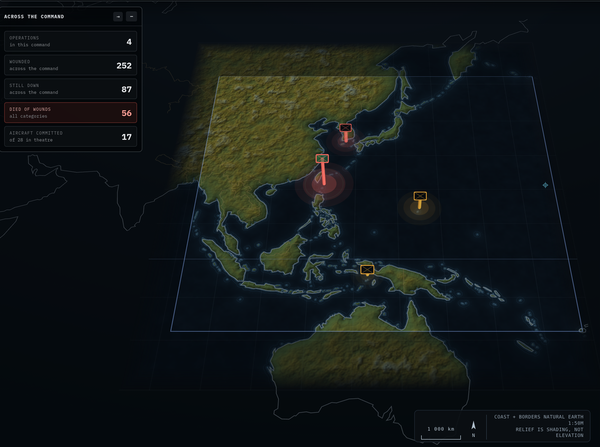

Left is the live THEATRE scale from v6.2. Right is the same 243 coastline runs and 31 international-boundary runs already in app/js/geo.js — real GSHHS shoreline and CIA WDB-II boundaries — redrawn with four things changed. No new data, no library, no network.

Skewed into an oblique parallelogram, land and sea nearly the same value, borders almost invisible, and not one country named.
Flat and north-up, land lifted clear of the sea, boundaries legible, countries and seas labelled.
| Defect | Why it reads badly | Fix | Effort |
|---|---|---|---|
| Oblique projection | The whole picture is drawn as a tilted parallelogram. Japan and the Philippines are sheared, so the shapes your eye knows do not match the shapes on screen. This is the single biggest cause of "hard to make out". | Draw north-up. Keep the tilt as an option if you like it for the hero shot. | 2–3 h |
| Land / sea contrast | Muddy olive land on near-black sea, with relief shading adding noise on top. Coastline is the most important line on a theatre map and it is the faintest. | Lift land, deepen sea, draw a crisp coast stroke over both. | 1–2 h |
| Invisible borders | The boundary data is loaded and drawn — at a contrast you cannot see. You genuinely cannot tell China from Vietnam. | Raise the stroke; dash it so it reads as political, not physical. | 30 min |
| No labels | Not one country or sea is named anywhere on the picture. This is why it does not feel like a map. | ~15 labels per theatre, placed by lon/lat, scaled with zoom. | 2 h |
Total 6–8 hours, all inside theater.js, and none of it touches the tactical 2D or 3D renderers.